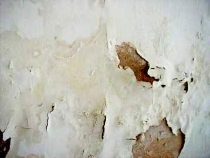
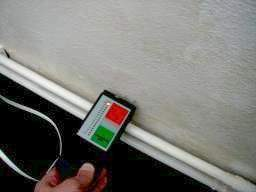
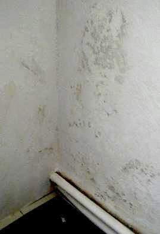
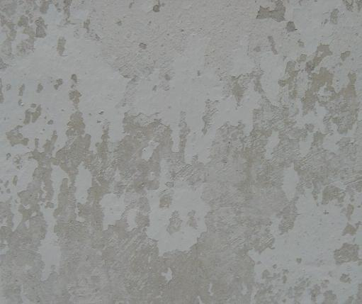
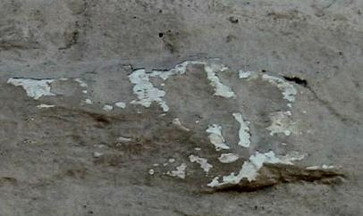
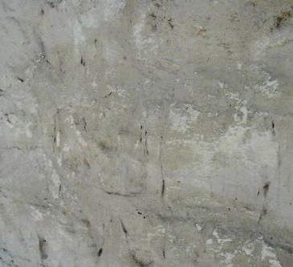

Weitere Datenübertragung Ihres Webseitenbesuchs an Google durch ein Opt-Out-Cookie stoppen - Klick!
Stop transferring your visit data to Google by a Opt-Out-Cookie - click!: Stop Google Analytics
Cookie Info. Datenschutzerklärung

 Altbau und Denkmalpflege Informationen - Startseite / Impressum
Altbau und Denkmalpflege Informationen - Startseite / Impressum
Inhaltsverzeichnis - Sitemap - über 1.500 Druckseiten unabhängige Bauinformationen
Die härtesten Bücher gegen den Klimabetrug - Kurz + deftig rezensiert +++
Bau- und Fachwerkbücher - Knapp + (teils) kritisch rezensiert
EnEV-Befreiung gem. § 17! +++
Fragen? ++ Alles auf CD
27.10.06: DER SPIEGEL: Energiepass: Zu Tode gedämmte Häuser
Kostengünstiges Instandsetzen von Burgen, Schlössern, Herrenhäusern, Villen - Ratgeber zu Kauf, Finanzierung, Planung (PDF eBook)
Altbauten kostengünstig sanieren -
Heiße Tipps gegen Sanierpfusch im bestimmt frechsten Baubuch aller Zeiten (PDF eBook + Druckversion)
Baustoffseite +++ Kalkseite +++
Zur aktuellen Vergütungspraxis von Luftkalkmörteln
Krachende Schwarten?
Ein kritischer Blick auf Mörtel, Putz und Anstriche am Baudenkmal
Christian Kern: Technische Informationen zum Kalkanstrich +++
Die häufigsten Fehler bei der Anwendung von Luftkalkmörtel, Kalkputz und Kalkanstrich
Zur Beurteilung des "Lotoseffekts" bei Oberflächenbeschichtungen

Konrad Fischer
Technische Informationen zu altbaugeeigneten Baustoffen
- Anstrich auf mineralischen Oberflächen
Anforderungen an die Deklaration von Kalkanstrich / Kalkfarbe / Kalktünche in technischen Merkblättern und Verarbeitungsrichtlinien
Eine Volldeklaration nach branchenüblichem Muster genügt oft nicht, um den
typischen Eventualitäten und dem Kalkpfusch vorzubeugen.
Die nachfolgend aufgelisteten Themenbereiche - in der jeweils erforderlichen Vollständigkeit und technisch
verständlichen Sprache für Handwerker, Bauherren und Selbermacher! - gehören unbedingt dazu, um zu einem
befriedigenden Ergebnis zu kommen:
FARBE
DAS PRODUKT UND SEINE BESTANDTEILE
Volldeklaration und Wirkungsweise
Grundierung:
Anstrich:
Bindemittel:
Zuschlag unter 10%:
Eigenschaftsvergütende Zusätze unter 2% und deren Wirkung:
DIE ANSTRICHEIGENSCHAFTEN
Zusammenfassung:
Anwendungsfälle:
Unverträglichkeiten:
Reversibilität:
Alterungsverhalten:
Festigkeitsentwicklung gegenüber Malgrund:
Carbonatisierung und Abbindeverhalten
Wasserdampfdurchlässigkeit und Kapillarsorption:
Trocknungsverhalten / Wasseraufnahme:
Verbrauch/Ergiebigkeit:
Einsatzgrenzen .
DIE VERARBEITUNG
Musterflächen:
Untergrundvorbereitung:
Mischen / Maschinentechnik:
Anstrichauftrag / Applikation:
Lagerung:
Instandhaltung / Wartungsintervalle:
Vielleicht auch ergänzende Hinweise auf die Herstellerbeteiligung
bei der Beurteilung der Objekteignung, Anlegen von Musterflächen, technische Einweisung und Abnahmen.
Horrorbilder - Thema: Mißlungener Kalkanstrich:

Ein Fallbeispiel: Abplatzende Innenfarbe auf durchfeuchteter Backsteinwand.

Da hilft auch keine Temperierung: Die Wand bleibt nach Sanierung nass.

Methylzellulosehaltiger Kalkanstrich auf Schellackschicht.
So sehr können leichtfertige Herstellerempfehlungen auf feuchtebelastetem Untergrund in die Hose gehen.
Das beschimmelt auch dank organischer "Verbesserung" der Kalktünche, bis der Raumnutzer erkrankt.
Man muß der Sache schon etwas genauer auf den Grund gehen, bevor man auf wohlfeile Herstellerberatung vertraut.

Abplatzender Spezial-Kalktünchanstrich nach einem Jahr.
Nach persönlicher Untergrundprüfung durch den Herstellermeister als tauglich empfohlenes Kalkprodukt.
Durch einen Meisterhandwerkerbetrieb auf selbst vorbereitetem Malgrund (alte Kalktünchen auf Kalkzementputz) verarbeitet.
Hersteller und Malermeister nach dem Mangel: "Der Untergrund des Kunden ist schuld".

.
Abplatzende und -sandende Spezial-Kalkschlämme auf historischem Kalkstein nach einem Jahr
Herstellerbeteiligung an Untergrundprüfung, Materialwahl und -rezeptur,
Mustererstellung, Verarbeitungseinweisung und Baubetreuung bis Abnahme
Ausführung durch Restaurierungsfachbetrieb von Untergrundvorbereitung bis Oberflächenfinish
Nach Auftreten der Mängel:
Verarbeiter: "Architekt, Produkt und Untergrund sind schuld"
Hersteller: "Architekt und Verarbeiter sind schuld".
Surftipps für Dialektiker
Gegenteilige/Andere/Zusätzliche Informationsquellen
- Bilden Sie sich eine eigene Meinung:
BAUHERR.DE
Farben Lacke Farbstoffe Pigmente Lösemittel Kalkfarben Kunststoffdispersionsfarben
Silikatfarben Leimfarben Anstrichstoffe Holzschutzmittel Naturharz-Dispersionfarben
<> Bundesverband der Deutschen
Kalkindustrie e.V. : Mitglieder des Bundesverbandes der Deutschen Kalkindustrie
e.V. <> Gütegemeinschaft
Kalkstein, Kalk und Mörtel e.V. <> Kalkputze
in der Baudenkmalpflege und Bausanierung <> KALKMÖRTELSYSTEME
IN DER BAUDENKMALPFLEGE UND BAUSANIERUNG <> putzer.de
- Was ist Grauputz? <> Kalkputzen:
Professionelle Putzsanierung - heimwerker.de <> Tipps
& Ratschläge zum Thema Putz - SV HLADIK
Literatur zu Putz und Farbe, Anstrich und Fassade, Badgestaltung und Lehmbau-Technik:
Altbau und Denkmalpflege Informationen Startseite